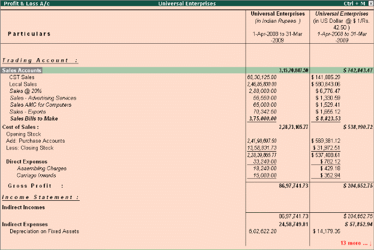

Multi-Currency
Many Organizations have transactions in more than one currency. Such transactions have to be recorded either in the base (home) currency or in the foreign currency. If the transactions are recorded in home currency, the rate at which the foreign currency is exchanged should be recorded as well.
Tally.ERP 9 allows you create and transact in multiple currencies. Tally.ERP 9 uses the term base currency for the currency in which your account books are kept. Foreign Exchange is used interchangeably with foreign currency. The base currency is specified while creating the company.
To use Multi-currency feature,
Step 1: Enable Multi-Currency Feature Go to Gateway of Tally > F11: Features > F1: Accounting Features
# Set Allow Multi Currency to Yes
Step 2: Create Multi-Currency Go to Gateway of Tally > Accounts Info. > Currencies > Create
# Enter the Currency Symbol and other details
Step 3: Define Rate of Exchange Go to Gateway of Tally > Accounts Info > Currencies > Rate of Exchange.
# Specify the Date for Rate of Exchange and other details (Standard, Selling and Buying). You can now enter transactions in the currency of your choice. To view report in Multi-Currencies,
# Select any report (i.e., Balance Sheet, Profit and Loss A/c, Trial Balance or any other report)
# Select Alt + C (New Column)
# Select the required currency (in which you want to view the report)
# Specify the Rate of Exchange for the selected currency and press Enter
